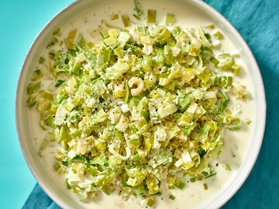

Description
One of the most absurdly delicious but extremely easy dishes that I have ever come across. It isn't for the lactose intolerant among us, but for everyone else I highly recommend.
The combination of leeks, butter, cream, and parmesan cheese is heavenly. Especially when it is combined with a crusty bread.
Ingredients
1 tablespoon unsalted butter
2 large leeks, washed and thinly sliced
1/4 cup of water
Kosher salt
Freshly ground black pepper
1/2 cup of heavy cream
1 tablespoon of finely grated Parmesan
Steps
In a nonstick skillet, melt the butter over medium heat. Add the leeks and water, season with salt and pepper, cover, and reduce heat to low, cooking until the leeks are soft—10 minutes. Stir in the cream and Parmesan, and serve.